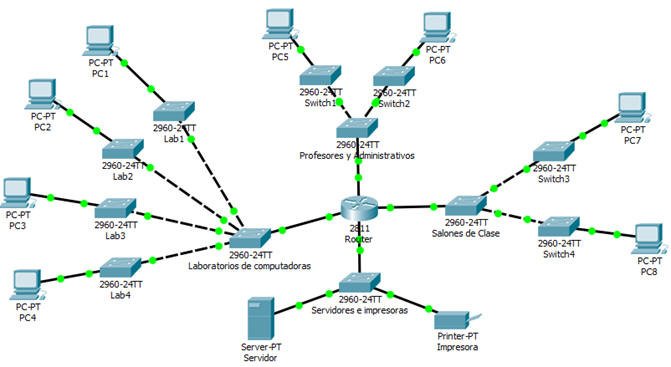

Objetivo:
- Que el alumno
aplique sus conocimientos en el diseño de esquemas de direccionamiento
utilizando máscaras de longitud variable.

Instrucciones:
- El administrador de la red de la
"Universidad
Autónoma de
Querétaro" nos ha solicidad que realicemos
el diseño lógico de la red alámbrica
de cada una de sus facultades. Se nos pide crear por cada facultad cuatro subredes que cumplan
con los siguientes requisitos:
- La primera es la subred
de los laboratorios con computadoras de cada facultad.
- La segunda es la subred
de los salones de clase, salas de juntas y auditorios
de cada facultad.
- La tercera es la subred
de los profesores y administrativos de cada facultad.
- La cuarta
es la subred de los servidores e impresoras
de cada facultad.
- Para cada subred, el número total
de IPs se
dividen entre
24, con el fin
de determinar
el número de
switches que se
necesitarán
colocar en cada
subred (cada
switch tiene 24
puertos). Se pide configurar solamente una computadora
por switch. Debe existir un switch principal o central.

Entregables:
- Documento que muestre
el esquema de direccionamiento
de la red utilizando máscaras de longitud variable.
- El esquema de direccionamiento y el archivo en Packet Tracer lo colocarán
en Blackboard dentro de la sección de
Entrega de actividades > EntregaProyectoFinal
- Diseño de la red en Packet Tracer:
- Para cada subred, el número total de IPs
se dividen entre 24, con el fin de determinar el número de
switches que se necesitarán colocar en cada subred (cada switch
tiene 24 puertos). Debe
existir un switch principal o central. Ejemplo: Si el total de IPs de una subred
es 100, se requerírían
5 switches (100/24 = 4.16 = 5) más el switch central.
- Se pide configurar solamente una
computadora por switch.
- Los swtiches también deben
tener asignada una ip.
- Se probará la conectividad
entre todos los dispositivos mediante un ping.
|
Tabla de número de IPs por subred |
| Facultad |
Red |
Laboratorios |
Salones |
Profesores |
Servidores |
|
1. Informática |
148.63.252.0 /22 |
115 |
26 |
111 |
4 |
|
2. Ciencias |
50.17.32.0 /19 |
60 |
150 |
114 |
11 |
3. Química
|
126.43.240.0 /20
|
45 |
149 |
27 |
8 |
|
4. Ingeniería |
26.37.168.0 /21 |
93 |
49 |
120 |
23 |
5. Psicología
|
219.97.64.0 /18 |
284 |
80 |
23 |
16 |
| 6. Derecho
|
77.45.190.0 /23 |
116 |
25 |
38 |
14 |
| 7. Medicina
|
135.72.128.0 /17 |
303 |
10 |
49 |
28 |
| 8. Lenguas |
214.67.248.0 /21 |
62 |
66 |
284 |
19 |
| 9. Enfermería |
49.254.172.0 /22
|
116 |
41 |
48 |
4 |

|